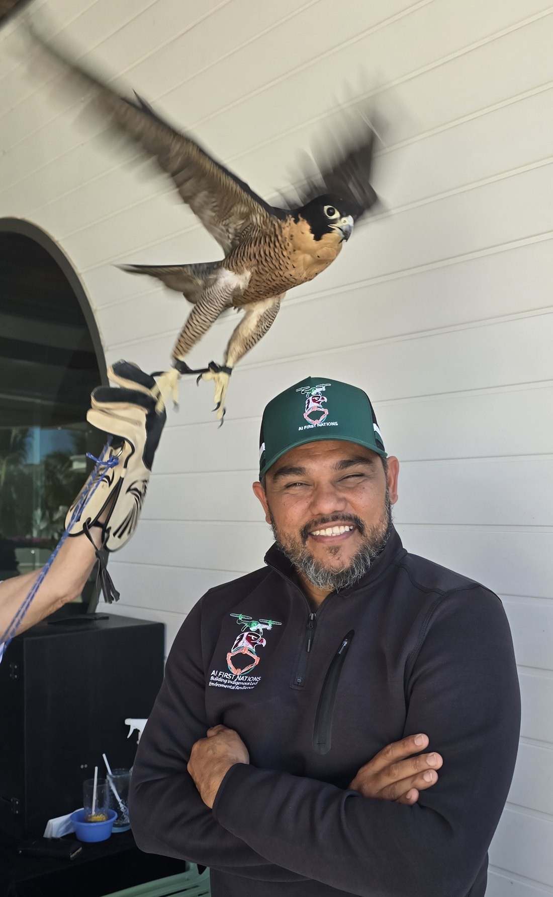
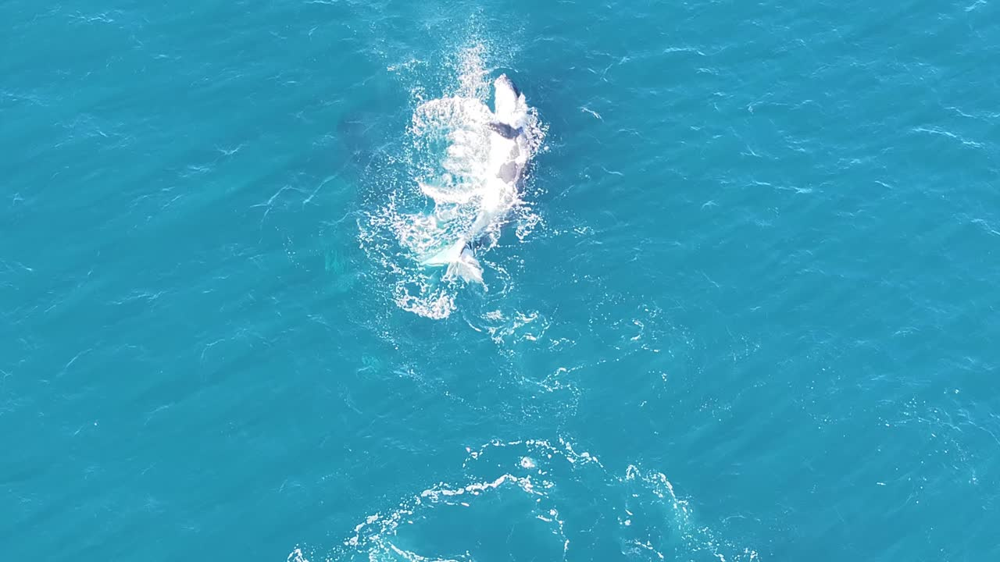

Aboriginal-led · Grounded in Country
Technology
for Country.
Drone services, cultural insight and practical learning.
Connecting people, Country and technology.
Goondoi Country
Mamu Rainforest and Sea Country
Mamu Rainforest and Sea Country
How can we help?
Start with what you need to achieve.
There’s more
to the story.
Explore the work, the contribution and the perspective behind it.
Work on Country
From wetland surveys to hands-on drone learning.
Explore the projects ↗
Culture meets technology
First Nations perspectives in national technology initiatives.
Explore the contribution ↗
A different perspective
Crocodile, whales, turtle and coastal wildlife—from above.
Watch the field footage ↗
Country first.
People always.
Aboriginal leadership and practical field experience. Meet John Fejo and the approach behind AI FIRST NATIONS.
Meet John & AIFN ↗What are you working on?
Tell us the place, the challenge and what you want to achieve.
john@aifirstnations.org.au